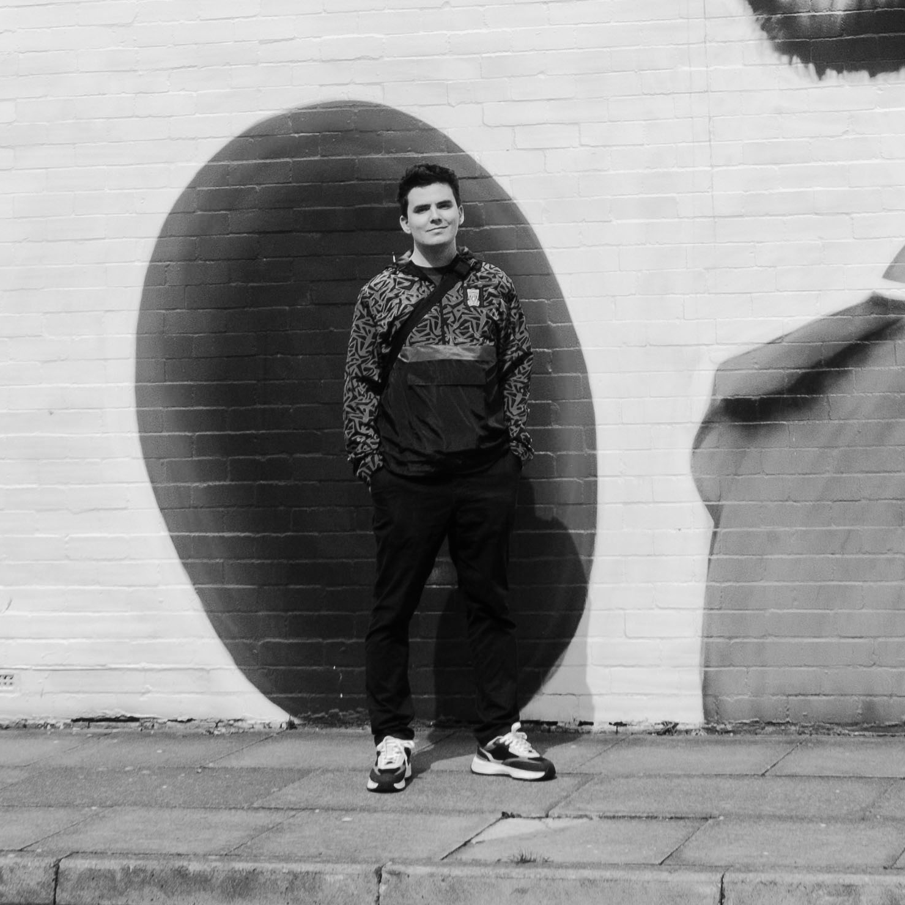

Home
Works
Contact

Gábor Balázs
Graphic Designer and Visual Artist
Târgu Secuiesc
Education
2019-2021:
Universitatea "Babeș-Bolyai",
Facultatea de Teatru și Film,
Arta Scurtmentrajului,
Cluj Napoca
2019-2021:
Universitatea "Babeș-Bolyai",
Facultatea de Istorie și Filozofie,
Teoria critică și studii multiculturale,
Cluj Napoca
2016-2019:
Universitate Creștină Partium,
Facultatea de Litere și Arte,
Arte Plastice - Grafică,
Oradea
Work
2022 -
Graphic Designer, Art Director
Diversity Advertising,
Cluj Napoca
2019 -
Visual Artist
2021:
Shadow Animator,
White Plastic Sky,
Animated Feature Film, Hungary
2021-2022:
Teacher (Fine Arts- Graphic),
Nagy Mózes Főgimnázium,
Târgu Secuiesc